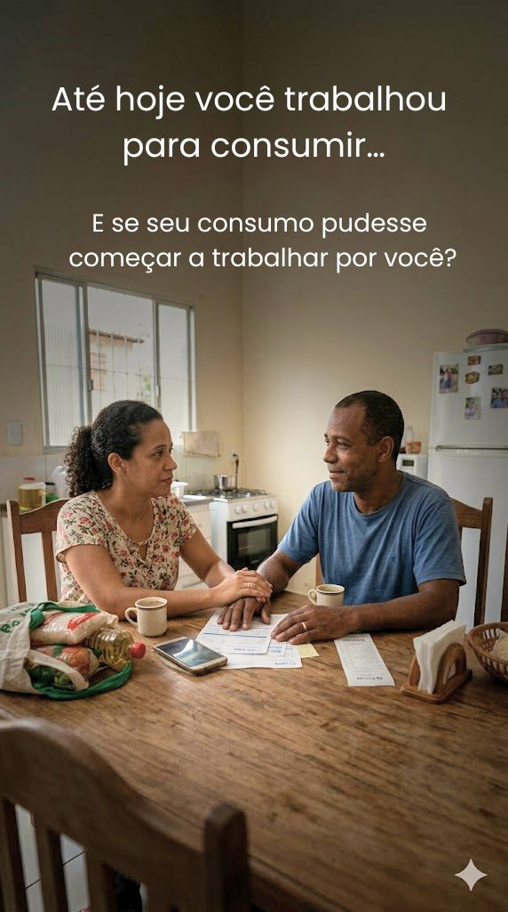
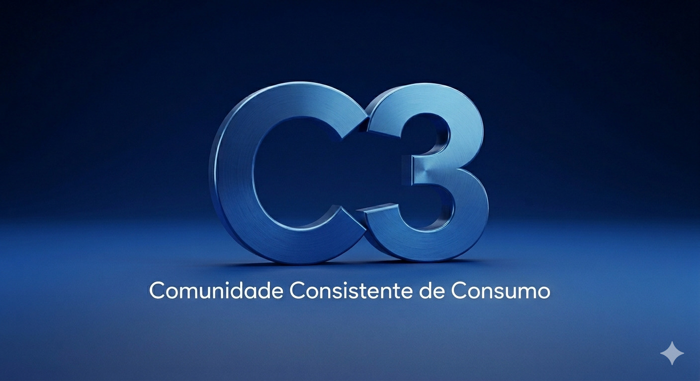

Descubra como pequenas decisões de consumo podem gerar ganhos consistentes ao longo do tempo.
O problema nem sempre é renda.
Muitas vezes, são pequenas decisões repetidas sem direção.
A C3 nasce da ideia de que consumo inteligente,
consistência e comunidade podem construir algo maior.
Você já consome todos os meses.
A diferença é quando isso passa a ter direção.
Pequenas mudanças consistentes podem gerar resultados progressivos ao longo do tempo.
Se isso fez sentido para você, o próximo passo é conhecer melhor como a comunidade, os produtos e a construção da C3 funcionam.